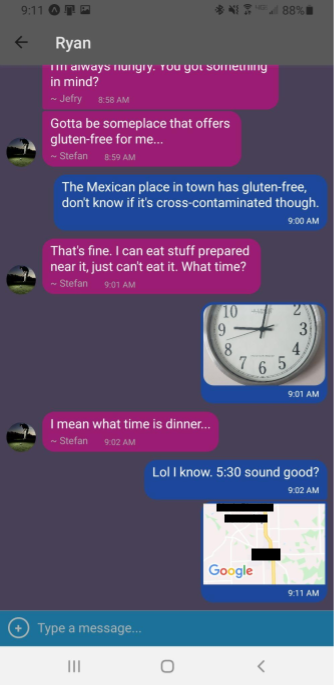

The challenge
To build a chat app for mobile devices using React Native that provides users with a chat interface and options to share images and their location. This project was built over two weeks as a part of CareerFoundry’s web development immersion course.
The process
Using React Native, a framework that allows me to build apps for both Android and iOS, I used the highly customizable Gifted Chat library to implement a chat room into my app. Then, I connected the app to a Google Firestore database to store messages, photos, and shared location data.
The goal
A mobile app that works on all mobile devices that allows users to share messages, images, and their location. Additionally, messages are stored locally so they can be accessed while offline.
My development process
Design Specifications
This application was built based on a set of specific design specifications for the home screen and user stories for the features. Every choice I made during the development of my app would need to be weighed against those requirements. For the home screen, I received a design mockup, a list of colors and font sizes to use, and some assets to get me started.
The following user stories guided my development process:
- As a new user, I want to be able to easily enter a chat room so I can quickly start talking to my friends and family.
- As a user, I want to be able to send messages to my friends and family members to exchange the latest news.
- As a user, I want to send images to my friends to show them what I’m currently doing.
- As a user, I want to share my location with my friends to show them where I am.
- As a user, I want to be able to read my messages offline so I can reread conversations at any time.
- As a user with a visual impairment, I want to use a chat app that is compatible with a screen reader so that I can engage with a chat interface.
Setting up my development environment
As this was the first time that I’ve built a mobile, app, there was some initial setup required to get going on the project. First, I needed to choose a programming language. I used JavaScript with React Native for a few reasons. For one, I already know JavaScript and React, so transitioning to React Native would come with little effort. Second, React Native can be used to develop for Android and iOS simultaneously. With React Native, I would not need to develop the app twice in two different languages that I have not learned.
With the programming language locked in, I also needed to set up a local Expo server that would compile my app and allow me to test on my mobile devices and emulators. The details of this setup are included in the README on the project’s GitHub page. After getting setup with Expo, I could easily code and debug each new line of code the same way I could with a regular web application using a bundler such as Parcel.
Designing the home screen
Because I was given a design for the home screen, building it was just a matter of learning some new syntax for React Native and applying the existing design. Mobile devices don’t use HTML elements such as <div> or <p>. They use native OS elements such as <view> and <text>. Making those changes only required a simple change of terminology on my end.
On the other hand, styling for a mobile app has some important differences to styling for the web. Mobile apps do not use CSS, but rather native stylesheets. React Native allows me to create a stylesheet object to assign properties to elements. After getting the hang of that, it was mostly a simple task. I did encounter one hiccup, however—Different phones have different heights.
Of course different phones have different heights! Everybody knows this! At first, I didn’t put any thought into this, but I quickly realized that when you style an element to take up a certain percentage of the height of the phone screen, your results will vary from phone to phone. This problem doesn’t come up as often in web design because we just design things that can scroll. If somebody has a different screen size, they can just scroll more or less. However, for mobile design, we often want a fixed window size that does not allow scrolling. When this is the case, you must be careful to design with some minimum-sized screen in mind, or you may end up with elements that are cramped or overlapping on small screens. In the end, I came up with a design that works well on all screen sizes (or at least, all screen sizes I tested. If this app looks funny on your screen, please tell me about it!)
Connecting my app to the Firestore database
Users of chat applications are accustomed to certain aesthetics and behaviors from the applications. One key performance feature people expect is that they can send and receive messages in real time with no perceived delay on either end. Enter Google Cloud Firestore—A real-time database that requires very little effort on my end to setup.
Google Cloud Firestore is a very cool database that I look forward to working with again in the future. After some minimal setup on the Firestore website and importing the library and some credentials into my app, the database was good to go. It has built-in functions that let you easily access and write to the database while maintaining a real-time connection that updates the state of my app for all users immediately. It even has built in security features! However, for this app, I just used anonymous user accounts so anyone can easily use the app with a username of their choice.
Implementing the chat interface with Gifted Chat
As I mentioned previously, users have specific expectations of how a chat application should look and function. For example, your messages should appear on the right side of the screen, and other people’s messages should appear on the left. There should be a text input on the bottom of the view to let the user type a message. Luckily, the Gifted Chat library allows us to easily implement these standard chat room features with customizable elements. All I had to do was import the GiftedChat element and render it on my screen to get started. All that was required to get the app to work was to connect the GiftedChat element to my database. From there, I was able to follow along with the documentation on GitHub to customize all the pieces, so it had my personal flair to them. I designed four custom themes which are all selectable from the main screen.
Adding options to share photos and location data
My chat app wouldn't satisfy the user stories unless it allowed users to share photos and location data with each other. As it turns out, grabbing images from the gallery, taking new images, and sharing location data on a mobile device are all nearly as easy to implement as the chat room itself. Expo provides functions to access the built-in device camera, location data, and file system with ease. I simply needed to create a way for the user to access those functions.
Gifted Chat, once again, came prepared with a solution in its CustomActions component, a built-in interface, which when implemented, let me create an expanding menu to let the user select an option to either share an existing photo from their library, take a new picture to share, or to share their location. Each action asks the user for the necessary permissions before accessing the device.
If the user shares a photo, the photo is saved to the Firebase storage, and the URL for the photo is saved in the message data so Gifted Chat knows where to find the photo. This is supported by Gifted Chat by default, so as long and I formatted my message properly, Gifted Chat would take care of the rest and display the photo in the message.
For location sharing, there is no automatic way to show a user’s location, but React Native offers a MapView component that I was able to use in my app. When a user shares their location, they are creating a simple message with their coordinates in it. When Gifted Chat sees a message with location data in it, I have instructed it to render a MapView component with the coordinates plugged into it.
Reading messages when offline
For any chat app, it’s important for a user to be able to read their messages while offline. While it’s true that users will likely be online 99% of the time, it would make for a bad user experience if they lost access to their messages whenever they temporarily lost service. To solve this problem, the app saves the messages into the device’s async storage every time the messages are downloaded from the server. That way, if the app in unable to make a connection to the database, it can load the messages previously saved by the user. I’ve also disabled the text input while offline, so users can’t try to send a message if they aren’t connected.
Accessibility
The only user story not covered up to this point is regarding accessibility. It is easy to forget to ensure an app is accessible to users with screen readers, but I wouldn’t want to alienate a portion of my users, especially when with only a little additional time invested, the app can be made accessible to users regardless of vision impairments. When testing my app with the built-in screen reader on my phone, I found that most of the chat interface already worked quite well with the screen reader. The parts that needed to be improved were the text-free color scheme selectors on the main page and the custom buttons I built with TouchableOpacity elements. After adding accessibilityLabel, accessibilityRole, and accessibilityHint parameters to the relevant elements, users with screen readers should now be able to navigate my chat app more easily.
Retrospective
The goal of this project was to build a chat app for mobile devices using React Native that provides users with a chat interface and options to share images and their location. This was my first dive into mobile app development, and I had the opportunity to learn about many aspects of mobile design, from the selection of the development framework, to storing message data in a real-time database, and using native device features like the camera and location data. I needed to be mindful of the wide range of devices and operating systems that might use the app, and I needed to ensure that even people with visual impairments could use the app without frustration.
This project can be used as a jump-off point for more sophisticated projects that include multiple chat rooms or for apps that do something else entirely! After becoming comfortable with the mobile development environment with Expo and React Native, it seems that there is nothing that I could do in a web app that I could not also implement into a native app. I look forward to exploring what else I can do with React Native in my future projects.